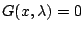
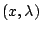
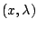
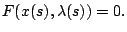
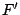
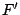

Next: About this document ...
Uniformly well-conditioned pseudo-arclength continuation
Kelly I. Dickson
243 Harrelson Hall, Campus Box 8205
North Carolina State University, Raleigh NC 27695
kidickso@unity.ncsu.edu
C.T. Kelley, I. C. F. Ipsen, I. G. Kevrekidis
Numerical continuation is the process of solving nonlinear
equations of the form

for various real
number parameter values,  . The obvious approach,
called natural parameterization, is to perturb
with each continuation step and find the corresponding
solution
. The obvious approach,
called natural parameterization, is to perturb
with each continuation step and find the corresponding
solution  via a nonlinear solver (Newton's method). While
this approach is reasonable for paths containing only
regular points (points
 where the Jacobian
matrix of
via a nonlinear solver (Newton's method). While
this approach is reasonable for paths containing only
regular points (points
 where the Jacobian
matrix of  is nonsingular), the approach breaks down at
simple fold points where the Jacobian matrix of becomes
singular and Newton's method fails.
is nonsingular), the approach breaks down at
simple fold points where the Jacobian matrix of becomes
singular and Newton's method fails.
In order to remedy this,
one may implement pseudoarclength continuation (PAC) which
introduces a new parameter based on the arclength of the
solution path. In order to implement PAC, one converts the
old problem
to a new problem

Using PAC on the new problem
requires the Jacobian matrix of  , , which ought to be
nonsingular at both regular points and simple folds if we
have indeed bypassed the problem that natural
parameterization presents.
, , which ought to be
nonsingular at both regular points and simple folds if we
have indeed bypassed the problem that natural
parameterization presents.
While the nonsingularity of
at regular points and simple folds is a known fact, we
present a theorem that gives conditions under which is
uniformly nonsingular for a path containing simple folds. We
do this by bounding the smallest singular value of from
below. The theorem justifies the use of PAC in a practical
way for solution curves containing nothing ``worse'' than a
simple fold.
Next: About this document ...
Bruce Fast
2006-03-11